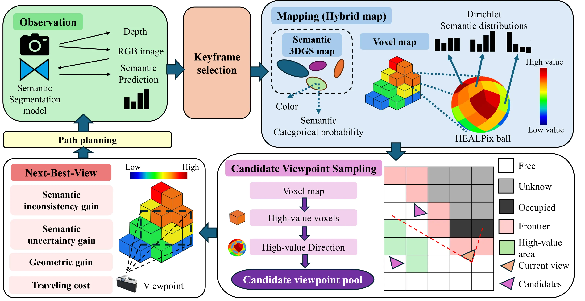
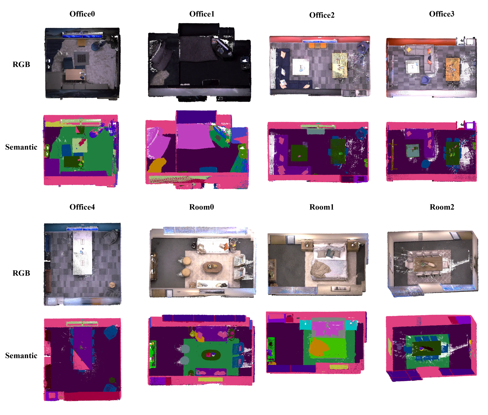
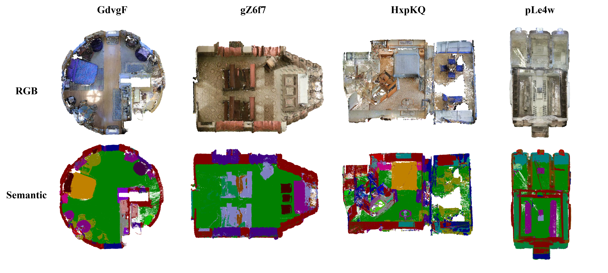
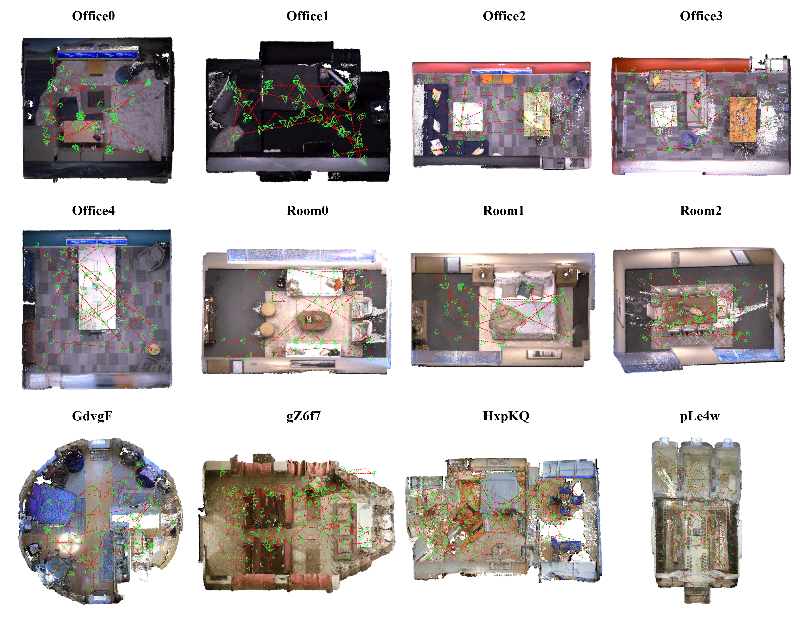
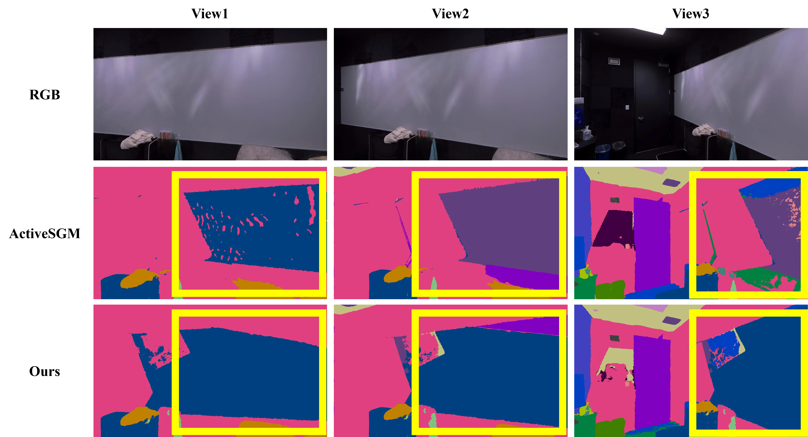
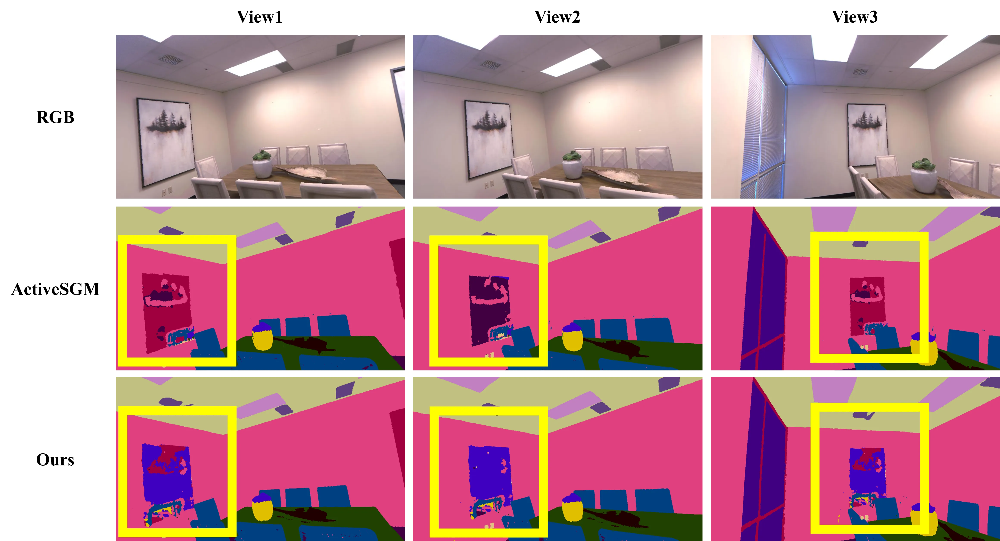
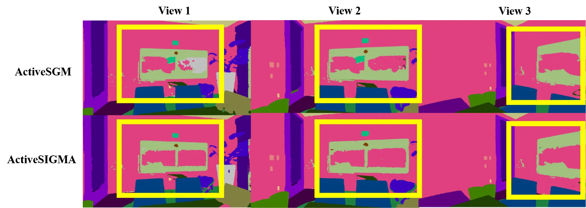
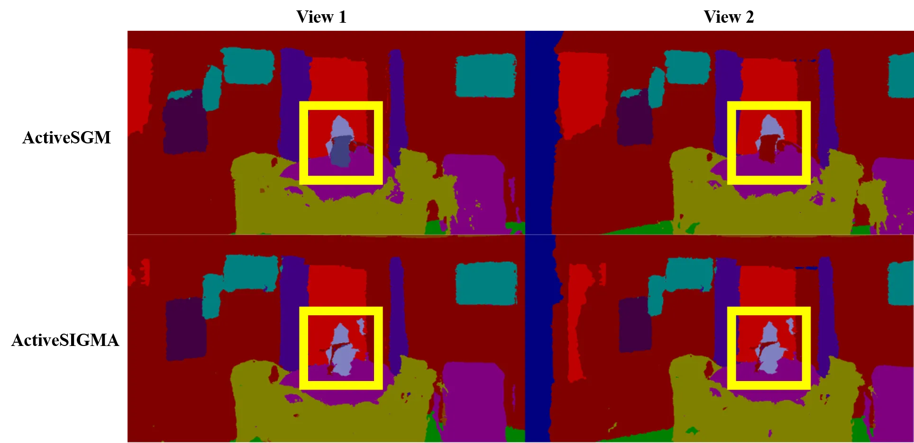

Inconsistency-aware exploration
ActiveSIGMA explicitly identifies and revisits regions with cross-view semantic inconsistency during exploration.
IROS 2026 Workshop · SeMaNa: Semantic-Aware Mapping and Navigation
Semantic Inconsistency-Guided Active Mapping
National Yang Ming Chiao Tung University, Taiwan
* Equal contribution
Autonomous robots operating in unknown environments require exploration to construct maps with accurate geometry and reliable semantic understanding. Existing methods mainly select viewpoints according to geometric coverage, photometric quality, or semantic uncertainty, but do not explicitly address cross-view semantic inconsistency. ActiveSIGMA introduces a hybrid Gaussian–voxel representation: the Gaussian map supports dense reconstruction and rendering, while the voxel map stores direction-conditioned semantic evidence. The framework converts inconsistencies across viewpoints into directional exploration heat, prioritizing semantically inconsistent and insufficiently observed regions during candidate generation and next-best-view selection. Experiments on Replica and Matterport3D demonstrate improved semantic mapping accuracy and more consistent predictions across novel viewpoints.
ActiveSIGMA explicitly identifies and revisits regions with cross-view semantic inconsistency during exploration.
The representation supports dense reconstruction and rendering while preserving direction-conditioned semantic distributions and accumulated evidence.
The proposed heat guides candidate generation and NBV scoring toward semantically inconsistent and under-observed voxel–direction pairs.
Experiments on Replica and MP3D show improved semantic mapping, comparable reconstruction quality, and more consistent novel-view predictions.
ActiveSIGMA processes each posed RGB-D frame with OneFormer and jointly updates a hybrid map composed of a semantic 3D Gaussian map and an exploration-oriented voxel map. The Gaussian map represents geometry, appearance, opacity, and semantic attributes for dense RGB-D and semantic rendering, while the voxel map stores occupancy and reliability-weighted Dirichlet semantic evidence in HEALPix viewing-direction bins. For every voxel–direction pair, ActiveSIGMA compares its semantic distribution with adjacent observed directions using Jensen–Shannon divergence, then modulates this inconsistency by accumulated evidence and free-space feasibility to obtain directional exploration heat. The planner combines geometric candidates sampled from newly discovered reachable free space with semantic refinement candidates generated from high-value voxel–direction pairs. Each candidate view is evaluated by rendering the Gaussian map and balancing semantic inconsistency gain, semantic uncertainty gain, geometric exploration gain, and travel cost; the highest-scoring view is then executed using an RRT-based path planner.

ActiveSIGMA improves average semantic mapping performance on Replica and MP3D while maintaining comparable photometric and geometric reconstruction quality.
8 scenes · 768 avg. steps
4 scenes · 2,007 avg. steps








Download the workshop poster for a compact overview of the motivation, hybrid-map design, directional exploration heat, viewpoint sampling, and experimental results.
Download posterActiveSIGMA is derived from and substantially builds on ActiveSGM. We also thank the authors of Habitat-Sim, ActiveGAMER, OneFormer, SplaTAM, Semantic Gaussians, and SGS-SLAM. Please refer to the paper for complete references and attribution.